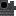

撑住悬空管道与梁的铁托架。
参数
材料3 铁粒 + 2 铁锭 + 安山合金
产量4 个
类型支撑件
详细教程
怎么获得
工作台第一行横放三块铁粒，第二行左放一块铁锭、中间放安山合金、右放一块铁锭，一次出 4 个金属支架。形状和木质支架一模一样，只把木棍木板换成了铁。三颗铁粒加两锭铁，再放一块安山合金，一次出四个。
铁粒是用铁锭在切石机或工作台里拆出来的，一块锭能拆九粒，所以三粒其实只占三分之一个锭。加上两块铁锭和一块合金，四个支架的料不算贵，铁富余时值得多做。它和木支架用法一样，只是外观更适合工厂墙面。
怎么用
它贴在方块侧面，托住从旁边伸出去的管道、转轴和金属梁。管道跨过走道时，在两头各装一个，悬空那一段就有了受力点。装完再用扳手调整朝向，能对着四个水平方向转。先放支架再搭梁，顺序反了梁会浮空。
金属版适合机器间、锅炉房、车站雨棚，颜色和工业铁块、铁格栅是一个调子。木质版留给木屋和码头，两种支架混用时按结构分区，别在同一根梁上换来换去。和金属梁搭配最整齐，接缝能对齐。
常见坑
它不传递旋转，也不是齿轮箱，想让轴拐弯还得另外接齿轮。支架只负责托住和好看，内部没有任何传动结构，别把它当连接件。背后没有方块时支架放不下去，得先垫一层墙。
支架是薄片，不能当承重柱往上叠；长距离悬挑得用金属梁做骨架。拆的时候敲支架本身，别顺手把背后的墙也带下来。拆支架前先把上面的梁移走，否则会一起塌。